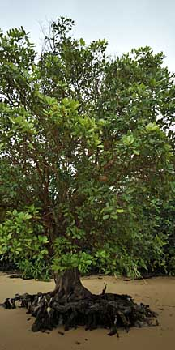
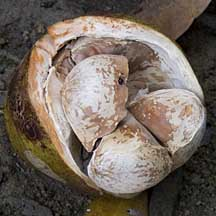
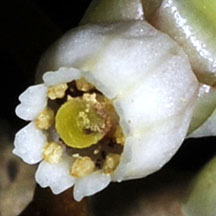
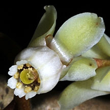

|
|
| plants text index | photo index |
| mangroves | Xylocarpus in general |
| Mangrove cannon-ball tree or Nyireh bunga Xylocarpus granatum Family Meliaceae updated Jan 2013 Where seen? This handsome tree with cannon-ball shaped fruits is commonly seen in our mangroves. According to Ng, it is found in many of our mangroves and many trees are found at the northern coast of Pulau Tekong. According to Corners, it is common in all Malayan mangroves. According to Hsuan Keng, it was found in mangroves including Kranji, Serangoon, Pulau Seletar. It was also known as Carpa obovata. Other Malay names for it include 'Nireh' and 'Nyireh Udang'. Features: A tree 3-8m to 20m tall. Bark smooth, reddish or orange, flaking off in patches, revealing greenish new bark so the overall appearance is blotchy and resembles the camouflaged uniforms used by soldiers. Trunk base of older trees often enlarged with well-developed buttresses forming narrow ribbon-like undulations extending away from the trunk. Compound leaf comprising 2-4 pairs of leaflets (3.5-12cm long) oval or oblong (tip rounded rather than sharp), thick and leathery. The compound leaves are arranged in a spiral and wither to an orange red. Flowers tiny (0.5cm) white to pinkish in clusters on an inflorescence. According to Tomlinson, the flower has a "strong but pleasant scent". Bees are recorded as flower visitors and the shape of the flower suggests it is pollinated by short-tongued insects. It appears to bloom seasonally, with X. granatum trees on various shores in Singapore blooming at the same time. Fruit globular and large (10-25cm in diameter) like a cannon-ball or bowling-ball, brown with corky seeds. There are usually 8-10 seeds in a single fruit, although 20 seeds have been recorded. The fruits develop rapidly, usually only one fruit per inflorescence. The ripe fruit can weigh 2-3kgs! When ripe, the fruit splits open and/or drops off the tree and shatters, releasing the seeds which float away. The seeds may start to germinate as they float. 'Granatum' means 'full of seeds'. The angular seeds fit perfectly inside the round fruit. But once spilled from the fruit, the seeds are hard to fit back together. So the tree is sometimes called the 'Puzzle nut' mangrove or 'Monkey puzzle' tree. Human uses: According to Burkill, it is produces a timber valued in making boats, houses and furniture. It is also valued as firewood. The bark is so popular in tanning and tougening fishing nets that "in one part of Java, it is rare to find a tree which has not been peeled." The bark is dark outside and bright red within, and so thin that a tree yields very little of it. Medicinal uses include the bark for dysentery, roots in a secret recipe against cholera, and the seeds for various ailments. |
 Pulau Semakau, Jan 09  Leaflets spoon-shaped, with rounded tips. Pulau Ubin, Jan 09  Bark smooth flaking off in patches. Pulau Ubin, Jan 09 |
|
 Seeds fit like a puzzle within the fruit. Pulau Ubin, Jan 11 |
 Large globular fruit. Pulau Semakau, Feb 09 |
 Well-developed ribbon-like buttresses. Pulau Ubin, Jan 09 |
|
 |
 |
 Lim Chu Kang, Apr 09 |
| Nyireh bunga on Singapore shores |
| Photos of Nyireh bunga for free download from wildsingapore flickr |
| Distribution in Singapore on this wildsingapore flickr map |
|
Links
References
|
|
|